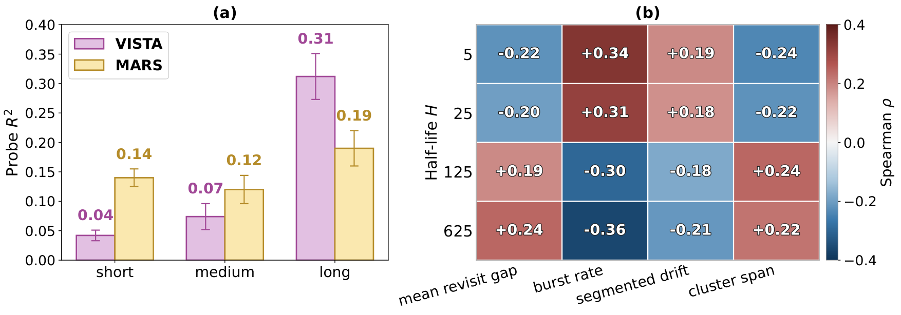
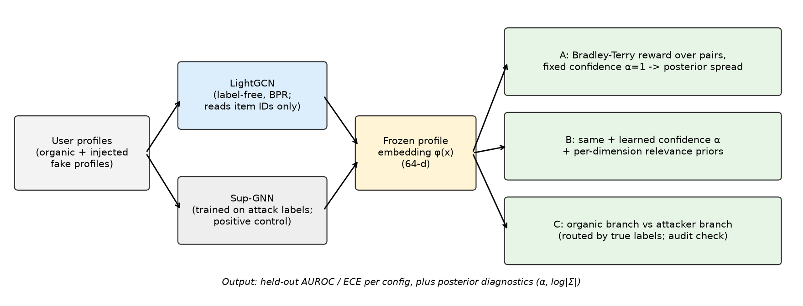

目录 · 6 节
1历史热不热门，看不出这条请求有多难2这个不确定性怎样变成裁剪比例3走一遍：一条没把握的请求怎么留下更多容量4统一压缩和单边压缩，都没把这截差距补上5这对做端侧推荐的人意味着什么6局限有人历史很稳、有人刚换口味，推荐模型却砍得一样多：RACE 按排序没把握的程度来减肥你在手机上打开推荐页。云端已经送来几十个候选，比如 50 个，真正决定你看见哪几条的那一次打分，要在这部手机上再排一次。
可是不同人的历史，难度差得很远。有人最近二十次几乎都在同一个品类里，模型看完这段历史，名单顶部几个候选分差很大，排起来很稳。有人刚从游戏跳到唱片再跳到厨具，同样看完二十条，顶部几个候选的分差会收得很窄，再稍微扰动一下方差，前后名次就会换。
为了能在端上跑起来，现有办法常常先按一个固定比例把模型压缩好，再拿去服务所有人。稳的那条请求带着用不上的参数，变的那条请求该留的历史和参数却被砍掉了。
浙江大学和华为的这篇论文提出了框架 RACE。它面对的是端侧序列推荐里的容量-复杂度错配：统一压缩会让简单请求浪费算力，复杂请求又不够用。已有做法是两条。一条是在端上微调，每次更新都要反向传播，兴趣一变，系统还容易在一段时间内继续用过时模型。另一条是压缩：有的给所有请求同一张稀疏掩码，有的把权重做低秩分解，有的把用户历史压成固定数量的 token。也有方法会动态丢掉 token，或按设备定制参数，但不按这条请求有多难，同时调整模型容量和历史长度。RACE 先度量模型对 Top-K 名单排得稳不稳，把这个列表排序不确定性当成这条请求有多难的信号，再用早层特征把它预估出来，据此决定这条请求砍多少通道、留多少历史。四个公开数据集上，把它接到两个 Transformer 序列推荐骨干上——SASRec 用自注意力从交互历史里预测下一次点击，BSARec 是同一类任务上的另一个骨干——相对未压缩的原模型，平均 NDCG 分别提高 40.87% 和 47.73%，骨干推理的浮点运算量分别降为原来的 1/2.37 和 1/2.49。
按列表排序不确定性给每条请求分配容量，比统一压缩更准也更省；这一结论目前只建立在四个公开数据集、SASRec 与 BSARec 两个骨干、最大历史长度 20 的设定上。
历史热不热门，看不出这条请求有多难
既然固定压缩比会对不上不同请求的难度，一个很自然的想法是：先给这条请求打一个“有多难”的分，再决定留给它多少模型。
最顺手的分，是从输入里直接读出来的。比如这段历史里的物品够不够热门，或者用户最近的兴趣稳不稳。论文把请求按这两项各分成十组，看推荐效果有没有随之整齐变化。结果是，两条线都画不出可靠的趋势，也就不能拿来当分配算力的依据。

这说明，历史热门和兴趣稳定性这两项，都不能当成写死的难度分数来用。一条请求难不难，更接近模型自己这次排得有没有把握。已有的不确定性方法多半停在逐点上：只看单个物品分数抖得厉不厉害，不管名单里其他候选跟它是什么关系。排序要的是相对名次，只看单点方差不够。常见做法里，Dropout 要反复前向，集成学习要维护多份模型，端上既慢又占空间。
RACE 把预测头换成变分贝叶斯最后一层（VBLL）。权重不再写成一个点，改成一个高斯分布，一次前向就能给出每个物品的预测均值和方差。有了这两个数，它要度量的是模型给出的 Top-K 名单次序稳不稳，单看某个物品的分确定不确定不够。实验里 K 取 20，比后面评测用的前 5 名更宽，为的是看更宽一段名单的结构，不只盯最顶尖的几个。
这个不确定性怎样变成裁剪比例
问题接着来：这个“排得稳不稳”要到最后一层算完名单才知道。如果推理时先完整跑一遍再决定砍多少，分配算力就晚了。
RACE 把这件事拆成训练时的标签和推理时的预估。训练时，模型会一直跑到预测头，用给出的均值和方差，计算 Top-K 里每一对物品的胜过概率，再把这些概率的负对数加起来，得到列表排序不确定性。论文没有写清这个标签是在通道和序列掩码加上之前还是之后算的。分数间隔大、方差小时，一对里“谁在前”的概率接近 1，加起来的不确定性接近 0；分差变窄或方差变大，这个数就会升高，这条请求就被看成更难。它先在当前小批量里把这个数标准化，再经过一个 S 形映射，也就是把数 x 变成 1/(1+exp(-x))，得到这条请求的目标裁剪比例。映射里有一个负号：不确定性越高，裁出来的比例越低，留下的容量越大。这个目标比例只当预测器的标签，训练时不把梯度传回去。 Hoot 说
示意：正文走一遍已经把一条没把握的请求算到目标裁剪比例约 0.595，没有走训练时两条不同的梯度路径。这里接着这条请求，只看目标比例和通道掩码在训练里谁能改谁。
目标比例 τ* 停梯度 → 预测器拟合标签 → 预测的 τ 生成硬掩码 → 直通估计器让连续分数回传
- 目标比例 τ* → 预测器这条没把握的请求，目标裁剪比例 τ* 约是 0.595。训练时这个标签被停掉梯度，预测器要从早层特征去拟合它，但论文没有写这条拟合损失会不会再传回第一个 Transformer 块。τ* ≈ 0.595（沿用正文示意）
- 预测器输出 τ → 通道掩码真正拿来生成通道掩码的，是预测器输出的 τ，不是标签 τ*。下面为了把数字走通，假设此时预测器也输出 τ ≈ 0.595，和标签一样，再用这个预测值去切通道。示意假设：τ ≈ τ* ≈ 0.595
- 裁剪比例、敏感度分数 → 硬掩码五个通道的敏感度分数是 0.90、0.70、0.50、0.40、0.20（示意）。按预测的 τ ≈ 0.595 来砍，大约留下四成，5 个里留下分数最高的 2 个：0.90 和 0.70 留下，其余三个前向被硬掩码关掉。1 − 0.595 = 0.405，5 × 0.405 ≈ 2
- 直通估计器 → 连续敏感度分数硬掩码本身不可导，所以直通估计器在前向仍用硬掩码，反向却让连续分数走梯度，打分器还能继续学。0.50 就在切口下面，没有这条通路，它收不到把自己抬过去的梯度。0.50 低于留下的 0.70，高于被关的 0.40

出处
论文 §3.2.3：目标比例 τ* 在预测器训练时停梯度；§3.3：训练时用直通估计器，硬掩码停梯度，连续通道分数回传。0.595 沿用正文走一遍的示意目标比例；五个通道分数是本图示意。推理时不再算完整名单上的不确定性。第一个 Transformer 块跑完后，RACE 取出序列里最后那个有效物品的隐向量，当作当前用户的动态表示，送进一个两层的小 MLP。这个预测器直接吐出通道裁剪比例 τ，再经过一次线性变换得到序列裁剪比例 τ′。论文共享的默认值是通道砍大约 80%、序列砍大约 40%。τ 越大，这一层前馈网络里被关掉的通道越多（通道就是前馈层里可以单独开关的隐单元）；τ′ 越大，传到下一块的历史越短。
比例有了，还要决定砍哪一些。通道这一侧，RACE 复用已经算过的隐向量，不再另挂很重的外部特征提取器。一个很轻的敏感度打分器（论文称为超网络式提取器）把用户向量映射成每个通道的敏感度，再按 τ 对应的分位数一刀切：分数够高的通道留下，其余用掩码乘在前馈层权重上关掉。训练时用直通估计器，前向是硬掩码，反向让连续分数走梯度。序列这一侧，它先把这一块的多头注意力取平均，再按查询位置把后段注意力放大，最后用连乘把“后面这些查询是否一直用到这个物品”累积成一个重要性。每一块只把重要性最高的那一部分历史留给下一块。训练时对落选的位置做软掩码，让一个批次里的长度保持一致；推理时直接丢掉这些 token，浮点运算量立刻下降。

实现里最大历史长度是 20，两个骨干都用 4 个 Transformer 块，物品 embedding 维度 64。
走一遍：一条没把握的请求怎么留下更多容量
下面用一组示意数字，把一条没把握的请求从“名单不稳”走到“少砍一点”算一遍。实验里 Top-K 取 20，一共有 190 对比较；这里先用 3 个物品把公式算清楚。
第一步，看名单稳不稳。变分贝叶斯预测头给三个物品 A、B、C 的均值是 2.0、1.0、0.9，方差是 0.1、0.1、1.0（示意）。一对物品里，前者排在前面的概率这样算：先把两个方差相加再开平方，用均值的差去除这个平方根，然后送进标准正态的累积分布函数。算下来，A 稳赢 B 的概率约 0.987，A 赢 C 约 0.853，B 赢 C 只有约 0.538。列表排序不确定性就是这三个概率取自然对数再加负号：约 0.013 + 0.159 + 0.620 = 0.792。如果三对都是 0.99 这种几乎不含糊的结果，同一个数只有约 0.030。多出来的那一截，来自 B 和 C 分差只有 0.1、C 的方差又到了 1.0。
第二步，把这个不确定性变成裁剪比例。这里把目标中心取成论文默认的通道裁剪比 0.8（示意），映射里的居中项是 ln(0.8/0.2)≈1.386。假设标准化之后，这条没把握的请求得到 +1，一条很有把握的请求得到 -1（示意）。没把握的那条，目标裁剪比例是把 -1 + 1.386 送进 S 形函数，约 0.595；有把握的那条则是 1 + 1.386，约 0.916。换句话说，难的这条大约砍六成通道、留下四成，容易的那条大约砍九成、只留一成。推理时，这个比例由早层的小预测器直接给出，不必先算完整名单。
第三步，按这个比例给前馈层做掩码。敏感度打分器先给每个通道打分，再在分位数处切开，掩码乘在前馈层权重上，用来关掉其余通道。对这条没把握的请求，τ≈0.595，大约 40% 的通道留下；对那条有把握的请求，留下来的大约只有 8%。谁留下来，取决于当前用户向量认为哪些通道更敏感，各条请求不会共用一张静态稀疏表。论文把裁剪后的计算记入骨干浮点运算量，但没有写清实现里是跳过这些通道的矩阵运算，还是先算完再乘掩码。
第四步，历史也按比例缩短。论文共享的默认序列裁剪比是 0.4。历史长度是 20 时，一块里留下 20×0.6=12 个物品，其余在推理时被丢掉。序列比例由 τ 经一次线性变换得到，论文没有写出变换系数；方向与通道一致，没把握的请求会少砍一些历史。留下来的 12 个按上面那个带位置权重的累积注意力重要性来选，不会只切掉最老的。四个块会把这件事做多轮，后一块看到的序列更短。
第五步，把这套分配放到实验结果里看。论文有一个去掉不确定性引导的版本，数字回到未压缩原模型，增益全部消失。这一行同时拿掉了后面的通道和序列定制，所以它说明的是整套自适应流程一起消失的结果，不能单独证明不确定性信号贡献了多少。只换上变分贝叶斯预测头、不做通道和序列定制，效果还会下降，比如 SASRec 在 MovieLens-100k 上的 NDCG 从 0.0299 降到 0.0263。真正把“按请求改比例”单独拿出来比的，是两种定制都做、但裁剪比固定的版本：它已经超过原模型（同一栏是 0.0376）；RACE 再按请求动态分配之后，在豆瓣接 BSARec 上，NDCG 从固定比例版本的 0.0233 升到 0.0327，高出 40% 以上。只做序列过滤、关掉通道定制，在豆瓣上会低于原模型：SASRec 从 0.0141 降到 0.0104，BSARec 从 0.0206 降到 0.0094。这些消融能说明通道定制、序列过滤和动态比例都有贡献，而且动态分配比“两边都砍、但比例固定”还多一截。它们说明不了不确定性信号单独贡献多少，也说明不了 τ 到 τ′ 那次线性变换贡献了多少，因为论文没有单独拿掉这两项。
统一压缩和单边压缩，都没把这截差距补上
四个数据集是 MovieLens-100k、豆瓣、Amazon-CD 和 Amazon-Game，去掉交互不足 10 次的用户和物品，每用户最近 10% 的交互做测试。评测是在全部物品上算 NDCG@5 和 Hit@5，不算先抽样再排的结果。算力用骨干推理的浮点运算量，单位是百万次（MFLOPs）。
对照里，SNIP（训练前按显著性剪连接）和 GEM（初始化时找子网）让所有请求共用同一张掩码。APG（低秩分解）把稠密权重换成低秩近似。DIET（按设备做多级敏感度分析）为不同设备定制参数。ATP-LLAVA 动态丢掉冗余 token。PerSRec 把历史压成固定数量的可学习 token，并保留最近交互；CAUSE（按类目合并历史）把历史合并成按类目来的 token，压缩预算同样是固定的。端上微调则保持全精度，额外付出反向传播的开销。
在 SASRec 的豆瓣这一栏，RACE 的 NDCG 从原模型的 0.0141 升到 0.0261，比对照里较强的 APG（0.0224）还高 16.52%，说明统一压缩和单边低秩分解都没把这截差距补上。接上 BSARec 之后，Amazon-CD 上它比 DIET 的 0.0419 高出 15.04%，浮点运算量也低于固定预算的 CAUSE。单边定制和固定预算的历史压缩，跨数据集时起伏更大；有限数据上的端上微调，也不保证比原模型更好。
| 方法 | ML-100k NDCG@5 | 豆瓣 NDCG@5 | 豆瓣 FLOPs |
|---|---|---|---|
| 未压缩原模型 | 0.0299 | 0.0141 | 1.8432 |
| APG | 0.0338 | 0.0224 | 0.8947 |
| RACE | 0.0427 | 0.0261 | 0.7928 |
（数字来自论文表 1，骨干为 SASRec。FLOPs 单位是 MFLOPs。）
列表不确定性这件事，在 Amazon-CD 接 SASRec 的分组里看得更直接。把请求按不确定性分成十组，定制之前，低不确定性的 D1 到 D3 组 NDCG 明显更高，高不确定性的 D8 到 D10 组明显更差，负相关是清楚的。定制之后，多数组的 NDCG 升了，组与组的差距也缩小，高不确定性组从多留下来的容量里拿到的增益最大。图里最低不确定性的 D1 组，定制后的平均 NDCG 低于定制前，论文没有单独给出这组的降幅。预测出来的通道裁剪比也随不确定性升高而下降，Pearson 相关是 -0.319，Spearman 相关是 -0.496。

如果不用这套列表不确定性，而把预测头换成 Dropout 或集成学习，再在同一套动态阈值流程里比，豆瓣上 SASRec 的 NDCG 分别只有 0.0216 和 0.0197，低于 RACE 的 0.0261。预测头仍用变分贝叶斯、只改不确定性的汇总方式时，逐点的均值方差或熵，以及带局部排序信息的成对间隔、LIDU（无标签性能估计），也都低于或最多接近 RACE。序列过滤若改成各头注意力的全局平均，或加上因果掩码后再平均，豆瓣接 SASRec 的 NDCG 是 0.0238 和 0.0241，低于 0.0261。论文的解释是：全局平均没管序列推荐里的因果掩码，加了掩码之后，靠前的物品仍会拿到和相关性无关的过量注意力。
算力账换成端上重排来看。设定是云端先预取 50 个候选，端上再排，延迟在 4 核 CPU 上测，骨干仍是 SASRec。RACE 的骨干浮点运算量从 1.8432 降到 0.7549，降了 59.0%；额外开销只有 0.0490，比 DIET 的外部开销低 62 倍，说明复用早层隐向量之后，真正多出来的计算很少。单次推理 5.780 毫秒，比微调和 DIET 都更短。
测试时的算力约束如果比训练更紧，豆瓣和 Amazon-CD 上的 NDCG 只降 0.8% 和 0.3%，浮点运算量再降 21.0% 和 11.0%。约束放宽时，NDCG 和 Hit 都有小幅提升，浮点运算量随之上升。论文没有写这时是改预测器的输出、截断比例，还是另加预算限制，只报告不必重新训练也能得到这些数字。
这对做端侧推荐的人意味着什么
先查一下现行压缩是不是对所有请求用同一个比例；如果是，模型自己对名单排得稳不稳，比历史热门或兴趣稳定性更适合当分配信号。
若已经在端上对云端候选做重排，不一定非要在端上做反向传播才能贴近个人。RACE 的附加开销来自复用早层隐向量的小预测器和一套通道、token 掩码。如果你正在按固定预算压缩历史，可以先核对现在的重要性是不是被因果注意力推给了靠前的物品；论文里用带位置权重的累积重要性，就是在压这件事。把预测头换成一次前向就能给出均值和方差的贝叶斯层，是为了在训练时给预测器造标签，单加这个头、不做后续定制，并不会自动把效果抬上去。
局限
效率数字来自 50 个候选、4 核 CPU、SASRec 这一套设定，换到别的候选规模或硬件上，延迟和额外开销会不会还是这个量级，论文没有报。通道裁剪比例到序列裁剪比例的线性变换系数，论文没有写明。消融证明了动态比例比固定比例更好，但没有单独拆开“只让通道动态、序列固定”或“只让序列动态、通道固定”的版本，两边各自还贡献多少，表里看不出来。
读完这篇，你觉得
夜读鸮记下了，谢谢你的反馈。
点一下即可，无需登录；再点一次撤回。只统计匿名次数，不记录你是谁。
相关论文RELATED
 Personalization · 2026-07-22Uncertainty as Remedy: Mitigating Satisfaction Label Bias in Short Video Multi-Objective Ensemble Ranking快手的 UAME 让融合排序模型除了打分再输出一个方差，表示各行为目标对这个视频的意见有多不一致，训练时给冲突大的视频对加权，线上只用均值打分、推理成本不变。EMER 底座上关注预估 GAUC 从 0.684 提到 0.724，线上长播 +1.6%；但 7 日留存只涨约 0.01%，不加权的消融有几项低于底座。
Personalization · 2026-07-22Uncertainty as Remedy: Mitigating Satisfaction Label Bias in Short Video Multi-Objective Ensemble Ranking快手的 UAME 让融合排序模型除了打分再输出一个方差，表示各行为目标对这个视频的意见有多不一致，训练时给冲突大的视频对加权，线上只用均值打分、推理成本不变。EMER 底座上关注预估 GAUC 从 0.684 提到 0.724，线上长播 +1.6%；但 7 日留存只涨约 0.01%，不加权的消融有几项低于底座。
Personalization · 2026-10-27MARS: Multi-resolution Adaptive Routing for Sequential Recommendation长历史推荐模型为了省算力，会把用户几千条行为压成一小组向量缓存起来。Duke 和 Meta 的这篇论文发现，这种缓存几乎记不住用户最近的行为，很久以前的老行为反而保留得最好，最近的兴趣被老兴趣盖住了。他们提出的 MARS 把历史同时写进四条记忆轨道，每来一条新行为，各轨道按不同的折扣淡化旧内容，有的几条行为后就忘掉一半，有的要几百条。读取时一个小路由网络给轨道打分，每个缓存向量只读得分最高的两条。在快手 KuaiRec 数据上，AUC 从 0.793 提到 0.804，打分延迟只多约 2%。 Personalization · 2026-10-23Think Harder Where It Matters: Item-Level Adaptive Recursion for Sequential Recommendation序列推荐模型给每条历史行为算表征时，有的行为过一层编码就收敛，有的要堆叠多层才稳定。三层 SASRec 里，76.1% 的行为第一层后就稳定，6.7% 要到第三层。LoopRec 让每条历史行为各自决定堆叠几层，不再整条请求共用一个深度。在 Amazon Software 数据集上，以 SASRec 为主干时 NDCG@20 相对提升 5.68%。
Personalization · 2026-10-23Think Harder Where It Matters: Item-Level Adaptive Recursion for Sequential Recommendation序列推荐模型给每条历史行为算表征时，有的行为过一层编码就收敛，有的要堆叠多层才稳定。三层 SASRec 里，76.1% 的行为第一层后就稳定，6.7% 要到第三层。LoopRec 让每条历史行为各自决定堆叠几层，不再整条请求共用一个深度。在 Amazon Software 数据集上，以 SASRec 为主干时 NDCG@20 相对提升 5.68%。 Personalization · 2026-11-11Query- and Candidate-Aware Long User Sequence Modeling for Sponsored Product Ranking in Search搜索广告排序用长期行为时，常见做法是拿候选商品去历史里找相似行为，可这样会漏掉和当前 query 高度相关、却和候选关系不大的历史。Wayfair 在最近行为之外，从长期历史里按候选和按 query 各检索一批行为，再连同 query 和候选两个上下文 token 一起送进 Transformer。离线看，两路检索合起来的 AUC 增益高于任何单路，说明它们找到的历史互相补充。另一个发现是，把候选信息拼进每条历史行为这一步不能省，去掉后模型比线上基线明显更差，只靠一个全局的候选 token 再间接交互补不回来。整套模型的线上 A/B 中，CTR 提高 6.0%，每次曝光的订单数提高 11.5%，模型服务延迟增加约 12%。搜索场景做长序列时，query 值得单独开一路检索，候选和历史的逐条交互也要留着。
Personalization · 2026-11-11Query- and Candidate-Aware Long User Sequence Modeling for Sponsored Product Ranking in Search搜索广告排序用长期行为时，常见做法是拿候选商品去历史里找相似行为，可这样会漏掉和当前 query 高度相关、却和候选关系不大的历史。Wayfair 在最近行为之外，从长期历史里按候选和按 query 各检索一批行为，再连同 query 和候选两个上下文 token 一起送进 Transformer。离线看，两路检索合起来的 AUC 增益高于任何单路，说明它们找到的历史互相补充。另一个发现是，把候选信息拼进每条历史行为这一步不能省，去掉后模型比线上基线明显更差，只靠一个全局的候选 token 再间接交互补不回来。整套模型的线上 A/B 中，CTR 提高 6.0%，每次曝光的订单数提高 11.5%，模型服务延迟增加约 12%。搜索场景做长序列时，query 值得单独开一路检索，候选和历史的逐条交互也要留着。
Personalization · 2026-11-04Auditing Representation-Space Fraud Detection: A Bayesian IRL Framework for Calibrated Uncertainty and Its Limits刷单检测几乎只报一个 AUROC，可这个数说明不了检测器什么时候可信。这篇论文搭了一套审计框架来检查这件事。常见的假账号注入都能被抓住。换成照抄真实用户的攻击后，结果完全不同：每个假账号复制一个真实用户评过的全部电影，再塞进 1 到 3 部目标电影，MovieLens-1M 上的 AUROC 掉到和随机猜一样。可直接比原始记录里账号之间评过物品的最大重合度，AUROC 就有 0.92–0.97。问题出在 embedding 上：LightGCN 只看评过哪些物品，再经过图传播把相似账号抹平，这个信号就丢了。
讨论
欢迎补充实验细节、复现经验或不同看法。需 GitHub 登录。
正在加载讨论…